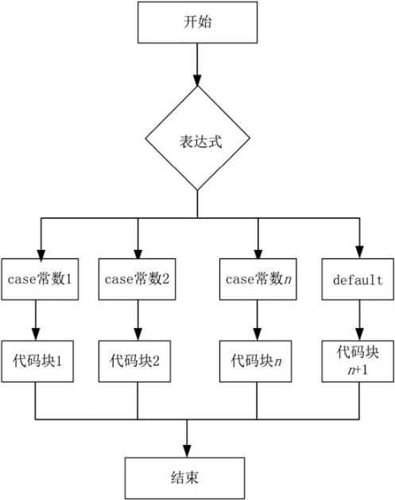

首页 > 编程笔记
Go switch case语句的用法
在Go语言中，switch 表示选择语句的关键字，switch 语句会根据初始化表达式得出一个值，然后根据 case 语句的条件，执行相应的代码块，最终返回特定内容。每个 case 被称为一种情况，只有当初始化语句的值符合 case 的条件语句时，case 才会被执行。
如果没有遇到符合的 case，则可以使用默认的 case (default case)，如果已经遇到了符合的 case，那么后面的 case都不会被执行。
Go语言 switch case 语句的语法格式如下：
如果前面的 case 都未匹配，则与 default 进行匹配。
switch case 语句的执行流程如图1所示。
Go语言改进了 switch 的语法设计，case 与 case 之间是独立的代码块，不需要通过 break 语句跳出当前 case 代码块以避免执行到下一行，例如：
1
在以上代码中，每个 case 均是字符串格式，且使用了 default 分支，Go语言规定每个 switch 只能有一个 default 分支。
与其他编程语言不同的是，在Go语言编程中，switch 有两种类型：
这里是int，x的类型是%T 1
switch case 的特点如下：
如果没有遇到符合的 case，则可以使用默认的 case (default case)，如果已经遇到了符合的 case，那么后面的 case都不会被执行。
Go语言 switch case 语句的语法格式如下：
switch (表达式) //表达式的值是已知的
{
case 常数1:
代码块1;
case 常数2:
代码块2;
…
default:
代码块n+1;
}
switch case 语句执行时，会用该表达式的值依次与各个 case 后的常数去对比，试图找到第一个匹配项，找到匹配的项后，就去执行该 case 对应的代码块，如果没找到则继续执行下一个 case，直到 default 为止。如果前面的 case 都未匹配，则与 default 进行匹配。
switch case 语句的执行流程如图1所示。

图1：Go switch case 语句的执行流程
图1：Go switch case 语句的执行流程
Go语言改进了 switch 的语法设计，case 与 case 之间是独立的代码块，不需要通过 break 语句跳出当前 case 代码块以避免执行到下一行，例如：
var a = "hello"
switch a {
case "hello":
fmt.Println(1)
case "world":
fmt.Println(2)
default:
fmt.Println(0)
}
输出结果如下：1
在以上代码中，每个 case 均是字符串格式，且使用了 default 分支，Go语言规定每个 switch 只能有一个 default 分支。
与其他编程语言不同的是，在Go语言编程中，switch 有两种类型：
- 表达式 switch：在表达式 switch 中，case 包含与 switch 表达式的值进行比较的表达式。
- 类型 switch：在类型 switch 中，case 包含与特殊注释的 switch 表达式的类型进行比较的类型。
1) 表达式 switch
也就是常见的 switch case 的用法，请看下面的代码：
package main
import "fmt"
func main() {
grade := "E"
marks := 95
switch {
case marks >= 90:
grade = "A"
case marks >= 80:
grade = "B"
case marks >= 70:
grade = "C"
case marks >= 60:
grade = "D"
default:
grade = "E"
}
switch {
case grade == "A":
fmt.Println("成绩优秀！\n")
case grade == "B":
fmt.Println("表现良好！\n")
case grade == "C", grade == "D":
fmt.Println("再接再厉！\n")
default:
fmt.Println("成绩不合格！\n")
}
fmt.Println("你的成绩为", grade)
}
运行结果：
成绩优秀！
你的成绩为 A
2) 类型 switch
类型 switch 语句针对变量的类型判断该执行哪个 case 代码块，例如：
package main
import "fmt"
var x interface{} //空接口
func main() {
x = 1
switch i := x.(type) {
case nil:
fmt.Println("这里是nil,x的类型是%T", i)
case int:
fmt.Println("这里是int,x的类型是%T", i)
case float64:
fmt.Println("这里是float64,x的类型是%T", i)
case bool:
fmt.Println("这里是bool,x的类型是%T", i)
case string:
fmt.Println("这里是string,x的类型是%T", i)
default:
fmt.Println("未知类型")
}
}
运行结果：这里是int，x的类型是%T 1
switch case 的特点如下：
- switch 和 if 语句一样，switch 后面可以带一个可选的简单的初始化语句。
- switch 后面的表达式也是可选的，如果没有表达式，则 case 子句是一个布尔表达式，而不是一个值，此时就相当于多重 if-else 语句。
- switch 条件表达式的值不像C语言那样必须限制为整数，可以是任意支持相等比较运算的类型变量。
- 通过 fallthough 语句来强制执行下一个 case 子句（不再判断下一个 case 子句的条件是否满足）。
- switch 支持 default 语句，当所有的 case 分支都不符合时，执行 default 语句，并且 default 语句可以放到任意位置，并不影响 switch 的判断逻辑。
- switch 和 .(type) 结合可以进行类型的查询。
关注公众号「站长严长生」，在手机上阅读所有教程，随时随地都能学习。内含一款搜索神器，免费下载全网书籍和视频。

微信扫码关注公众号